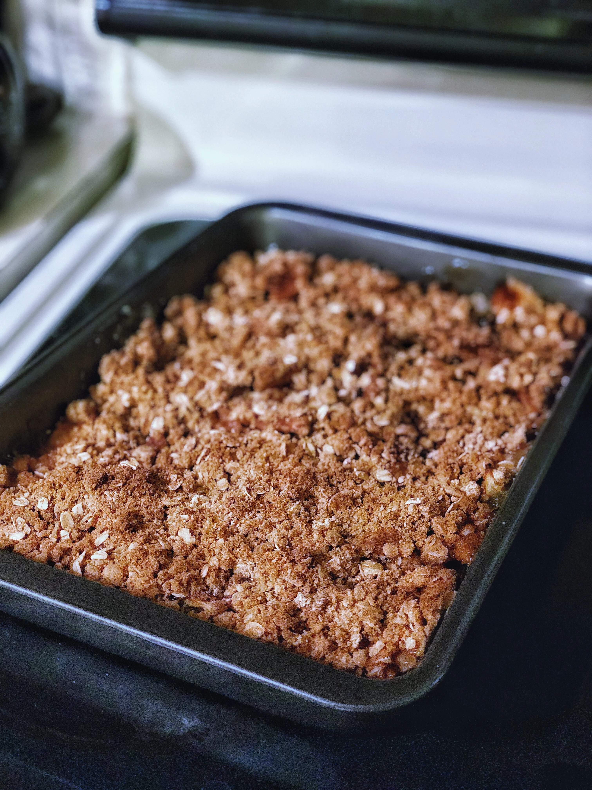

Apple Crisp

Description
Apple Crisp is a very simple dessert that's great served with ice cream.
Ingredients
- 10 cups all-purpose apples, peeled, cored and sliced
- 1 cup of sugar
- 1 tablespoon all-purpose flour
- 1 teaspoon ground cinnamon
- 1/2 cup of water
- 1 cup quick-cooking oats
- 1 cup all-purpose flour
- 1 cup packed brown sugar
- 1/4 teaspoon baking powder
- 1/4 teaspoon baking soda
- 1/2 cup butter, melted
Steps
- Preheat oven to 350 degrees F (175 degree C).
- Place the sliced apples in a 9x13 inch pan. Mix the white sugar, 1 tablespoon flour and ground cinnamon together, and sprinkle over apples.
Pour water evenly over all.
- Combine the oats, 1 cup flour, brown sugar, baking powder, baking soda and melted butter together. Crumble evenly over the apple mixture.
- Bake at 350 degrees F (175 degrees C) for about 45 minutes.